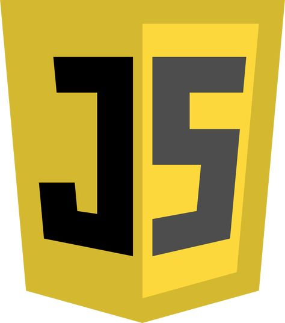
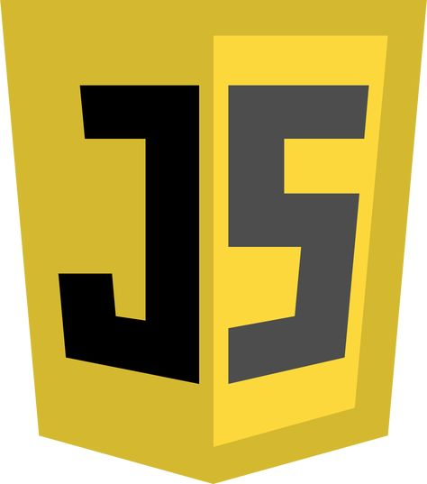
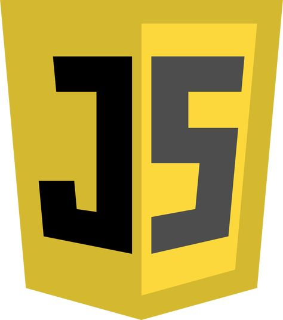

SKILLS

 


I am a passionate and driven Computer Science and Engineering student at Shree Devi Institute of Technology, with a strong interest in software development, AI, and web technologies. Through my coursework, projects, and internships, I have developed expertise in programming languages like Java, Python, and C, as well as web development tools like HTML, CSS. My goal is to contribute to innovative software solutions that solve real-world problems while continuously growing my technical and professional skills.
84.80%
81.83%
8.5 CGPA

Developed an AI-based system to detect diseases in mango leaves using Python and AI/ML libraries. Achieved 90% accuracy in disease detection.
The Student Feedback System is a web-based platform designed to collect, analyze, and visualize student feedback on courses, faculty, and overall academic experiences. This system helps educational institutions improve their teaching methods and curriculum based on data-driven insights.